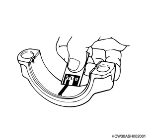
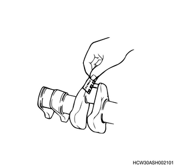
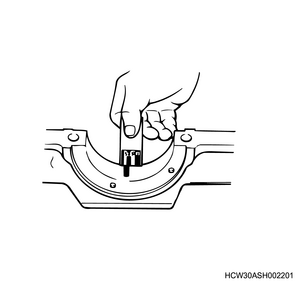
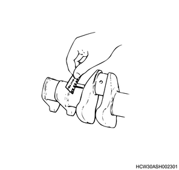

| PLASTIGAUGE type and measurable range | |
| Type | Measurable range |
| PG-1 (Green) | ： 0.025 to 0.076 mm { 0.00098 to 0.00299 in } |
| PR-1 (Red) | ： 0.051 to 0.152 mm { 0.00201 to 0.00598 in } |
| PB-1 (Blue) | ： 0.102 to 0.229 mm { 0.00402 to 0.00902 in } |
Method for measuring clearance between connecting rod bearing and crank pin
Clean the connecting rod and bearing, and assemble the bearing to the connecting rod.
Cut the PLASTIGAUGE to the width of the crank pin and lay it parallel while avoiding the crank pin oil hole.
Align the marking on the connecting rod with the marking on the cap, and assemble the connecting rod and cap to the crank pin. Apply molybdenum disulfide to the threaded portion and bearing surface of the tightening bolt. Tighten alternately so the cap is tightened to the specified torque.
Gently remove the cap and the connecting rod, and measure the width of the flattened PLASTIGAUGE using the scale printed on the packaging.
Caution


Method for measuring clearance between crank bearing and crank journal
Clean the bearing, as well as the cylinder block and crankcase bearing mounting surfaces, and assemble to the cylinder block and crankcase.
Gently place the crankshaft on the cylinder block, and settle it by turning it approximately 30 degrees.
Cut the PLASTIGAUGE to the width of the crank journal and lay it parallel while avoiding the journal oil hole.
Gently place the crankcase on the cylinder block, and apply molybdenum disulfide to the threaded portion and bearing surface of the tightening bolt. Tighten the bolts in order to the specified torque.
Gently remove the crankcase, and measure the width of the flattened PLASTIGAUGE using the scale printed on the packaging.
Caution

